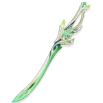

Аль-Хайтам

5-звездочный герой стихии Дендро, который вооружен одноручным мечом.
Билд "Урон в секунду Дендро"
Оружие
Свет лиственного разреза
Шанс критического урона увеличивается на 4%. После того, как обычные атаки наносят стихийный урон, владелец оружия получает эффект, увеличивающий урон, наносимый обычными атаками и элементальными навыками, на 120% от мастерства стихий. Этот эффект исчезнет после 28 попаданий или через 12 секунд. Вы можете получить эффект 1 раз в 12 секунд.
Артефакты
Позолоченные сны
(2) +80 к мастерству стихий
(4) Увеличивается силу атаки на 14% за каждого бойца в отряде с таким же глазом бога и мастерство стихий на 50 единиц за каждого героя с другим элементом. Эффект возникает 1 раз в 8 секунд и проявляется, даже если носитель сета не находится на поле битвы.